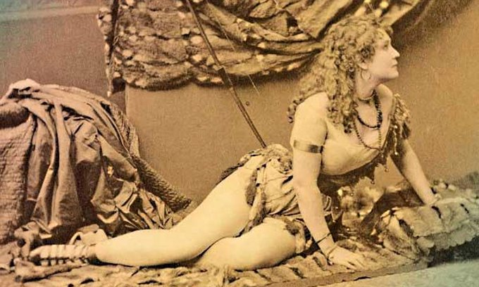
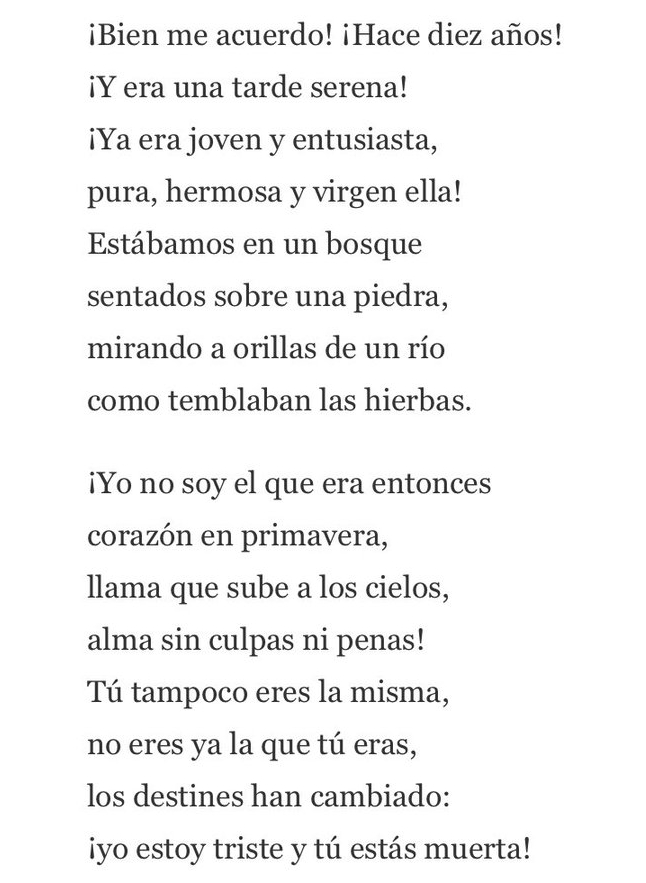
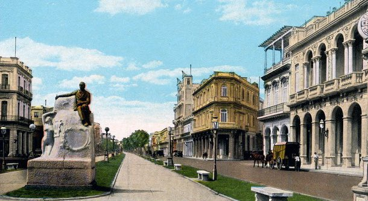
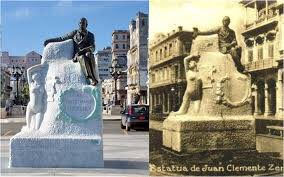
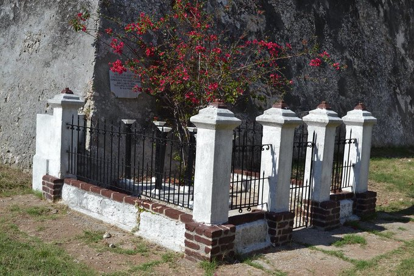

Los Hilos de Monik
Juan Clemente Zenea
Publicado el 28 de agosto de 2020 - 25 tweets - Hilo original en Twitter
1
Hay gente que parece destinada a la tragedia. El poeta cubano Juan Clemente Zenea es uno de ellos.
¿Sabías que a pesar de ser separatista accedió a actuar como emisario de España ante Céspedes? ¿Y que a aún así fue fusilado por órdenes del Capitán General?

2
Zenea nació en Bayamo en 1832, hijo de un teniente español y de una hermana del poeta cubano José Fornaris.
De adolescente ingresa en el colegio El Salvador, de José de la Luz y Caballero.
Con 14 años publica sus primeros poemas ... y comienza a meterse en problemas.
3
Durante una Semana Santa publicó un folletín en el periódico La Prensa, hablando de la Virgen María en términos "apasionados" y "ardorosos".
El Obispo de La Habana amenazó con excomulgarlo. Tuvo que esconderse. Al final, su padre medió y logró que firmara una retractación.
4
También de adolescente se hizo novio de la bailarina estadounidense Ada Menken. Ella, al parecer, fue bastante popular gracias a una coreografía en que bailaba semidesnuda.
En 1851 Zenea se inclina hacia la política. ¿Por qué? Narciso López tuvo algo que ver.
5
Tenía 19 años cuando Narciso López fue ejecutado públicamente en garrote vil el 1 de septiembre de 1851.
Si bien la muerte de López es más conocida, el 16 de agosto habían sido ejecutados 50 expedicionarios. Al parecer, fue un espectáculo cruel, con festejos y exhibición de despojos
6
El joven Zenea quedó marcado por ese episodio y comenzó a colaborar con un periódico clandestino llamado La Voz del Pueblo. Su editor, Eduardo Facciolo, fue apresado y ejecutado.
Zenea huye a NY y luego a New Orleans. Desde allí, planea unirse a alguna expedición anexionista.
7
En diciembre de 1853, un Consejo de Guerra en La Habana sentencia a Zenea (en ausencia) a muerte por el delito de traición ¿Qué hizo? Pues escribía propaganda anexionista... ¡y se la mandaba por correo al Capitán General!
Pero el movimiento anexionista no prosperó.
8
En 1854 el nuevo gobernador Juan de la Pezuela proclama una amnistía general, y Zenea decide regresar a Cuba.
Con 22 años, Juan Clemente Zenea ya había sobrevivido a una excomunión y una sentencia de muerte.
Otros poetas de la época sufrieron destinos trágicos.
9
Plácido (Gabriel de la Concepción Valdés) fue fusilado en 1844. José Jacinto Milanés quedó incapacitado por una enfermedad metal incurable en 1843.
Durante 10 años, Zenea se dedica a la literatura. Funda la Revista Habanera, que fuera luego censurada por el gobierno.
10
A sus 30 años, Zenea dice: "me he devorado a mi mismo, porque me he entregado en brazos de esas furias que se llaman pasiones".
Es la época en que escribe su obra cúspide: Fidelia. Un poema que personifica la Patria vencida ante un gobierno tirano.
11
En 1865 parte a New York, y luego a México, con la idea de no volver.
Pero en diciembre de 1868 le llega la noticia de que Bayamo, su pueblo natal, era el epicentro de la guerra de independencia. Toma un vapor a La Habana, y luego otro a NY planeando unirse a una expedición.
12
En octubre/1869 el vapor Lillian sale de la Florida cargando +500 expedicionarios dirigidos por el Gral. Domingo Goicuría ¿Y quién era su secretario? ... el Tte. Coronel Juan Clemente Zenea.
Pero la expedición fue un fracaso: se hicieron a la mar sin saber dónde desembarcar
13
Goicuría además recibió la noticia de que su único hijo había muerto, instantes antes de lanzarse al mar.
El barco navegó sin un destino fijo durante 5 días, gastando todo el combustible. Desembarcaron a la tripulación en unos cayos desiertos y sólo algunos oficiales...
14
...se dirigieron en el barco a Nassau para clandestinamente tratar de comprar carbón. Pero fueron apresados por un barco de guerra inglés. Y hasta ahí llegó la expedición.
Zenea tuvo que regresar a NY.
15
Entonces... ¿cómo terminó Zenea sirviendo de intermediario del gobierno español ante Céspedes?
Todo empezó cuando el Gen. Manuel de Quesada salió de Cuba y logró llegar a NY. Su informe del estado de la guerra fue ... aparentemente falso.
16
Quesada fue recibido con bombos y platillos, pero poco a poco se comprobó que la imagen victoriosa que pintaba no era tal.
Zenea fue uno de los que mostró mayor inconformidad con el rol de Quesada en la comunidad de emigrados.
Y es entonces cuando Nicolás Azcarate...
17
...llega a NY en representación de Segismundo Moret, Ministro español de Ultramar. Su propósito: negociar con los cubanos.
La propuesta era: reformas políticas y amnistía, pero sin garantías y ofrecidas en secreto.
No tiene buena acogida en la Junta Cubana
18
Azcarate, que era amigo de Zenea, le propone entonces viajar a Cuba y llevar a Cespedes la propuesta. Le ofrece además la posibilidad de ver por sí mismo lo que estaba en realidad pasando en la guerra
enea acepta y el Embajador de España ante EE.UU. le da un salvoconducto
19
El documento, fechado en 1870, indicaba a todos los militares españoles en Cuba que al portador (Zenea) debía permitírsele comunicarse con los insurrectos, y salir por el punto de su elección.
Zenea partió en secreto, sin decir nada a los emigrados en NY.
20
No le tomó más de un mes su misión. Se reunió con Céspedes, presentó la propuesta, y el 23 de diciembre se dirige a Sabinal para regresar a NY. Lo acompañaba Ana de Quesada.
Tropas españolas lo interceptan. Pero él muestra el salvoconducto y evita ser fusilado por el momento.
21
Telegrafían al Capitán General Blas Villate, Conde de Valmaseda, quien decide sea llevado a La Habana.
A Villate se le considera un militar cruel. Bajo su mando se fusiló a muchos jóvenes simpatizantes de la independencia... incluyendo los 7 estudiantes de medicina.
22
La mala fortuna de Zenea fue tal que Azcarate viajaba de vuelta a Madrid cuando esto ocurrió. Y en España asesinan a Prim, quien fuese impulsor de la propuesta de negociación. I
Se somete a Zenea a un Consejo de Guerra, a pesar de confirmar la autenticidad del salvoconducto..
23
El argumento de Villate fue que no se le había notificado de la misión de Zenea. Y lo acusa de actuar como agente de comunicaciones de Céspedes.
Ana de Quesada trató de que Zenea le diese los documentos para ocultarlos, pero él confiaba en el salvoconducto.
24
C Zenea comparece ante un consejo de guerra. Los documentos de las negociaciones, que él se negó a esconder, fueron usados como prueba de traición.
¿Actuó realmente Zenea como doble agente? ¿Cómo negociador a nombre de España y como mensajero entre Céspedes y la Junta Cubana?
25
Zenea llega a escribir una carta retractándose de todo, con la esperanza de recibir clemencia.
Tras casi medio año incomunicado en una celda, con 39 años, Zenea es condenado a muerte por garrote vil.
El 25 de agosto de 1871 muere Juan Clemente Zenea, fusilado.
